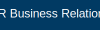

The Vocational Rehabilitation Business Relations Playbook
Welcome to the VR Business Relations Playbook! This repository is a living document designed to equip Vocational Rehabilitation (VR) Outreach and Service Coordination teams with the latest strategies, ethical considerations, and practical tools to build robust and effective partnerships with the business community.
Our goal is to move beyond transactional placements and build a dual-customer model where both the job seeker and the business are valued clients. This approach, combined with the ethical integration of technology, can significantly enhance the effectiveness of VR services.
Guiding Philosophy: Ethical, Data-Informed, and Business-Centric
This playbook is grounded in the principles of ethical AI and modern business engagement, inspired by the work of the Ethical AI in Vocational Rehabilitation consortium. Our core tenets are:
- Ethical AI and Technology Use: Leveraging technology to expand opportunities while ensuring fairness, transparency, and accessibility. This includes auditing tools for bias and maintaining a "human-in-the-loop" approach where VR professionals guide technology, not the other way around.
- Privacy-Preserving Data Collaboration: Using data to understand labor market needs and improve client outcomes without compromising the confidentiality of individuals with disabilities.
- A Dual-Customer Imperative: Treating businesses as true partners and customers. Our success is measured not just by placing a client, but by solving a business's talent needs.
The Three Pillars of VR Business Success
In the world of Vocational Rehabilitation (VR), sustainable growth comes from more than paperwork. These three pillars act as engines for stronger partnerships and better outcomes.
1. Empathy Engine ("Love Thy Neighbor")
What it is:
A relentless commitment to understanding and uplifting every stakeholder—clients, employers, co-workers, and community partners—so every interaction is rooted in genuine care.
Why it matters in VR business relations:
- Trust Building: Employers are more likely to engage when they feel respected and understood.
- Client Advocacy: Empathy encourages clients to share needs, leading to better job matches.
- Network Growth: Word-of-mouth referrals soar when partners know they're seen as people first.
How to activate it:
- Start meetings by asking, "What's most important to you today?"
- Share success stories highlighting individual journeys of clients and employers.
- Celebrate "neighbor wins," from small mentorships to major placement milestones.
2. Failure Fuel ("Fail Forward")
What it is:
An organizational mindset that treats missteps as springboards for smarter strategies and deeper innovation.
Why it matters in VR business relations:
- Rapid Experimentation: Each failed outreach yields data to refine your approach.
- Resilience Building: When teams see challenges reported without blame, collaboration grows.
- Competitive Edge: Those who iterate on setbacks gain an advantage.
How to activate it:
- Hold monthly "Flip the Script" sessions to discuss what didn't go as planned and lessons learned.
- Recognize the "best failure" of the quarter to normalize risk-taking.
- Log failures with simple templates that connect each lesson back to key metrics.
3. Kaizen Catalyst ("Continuous Improvement")
What it is:
A perpetual drive to refine processes and elevate outcomes through small, consistent enhancements.
Why it matters in VR business relations:
- Process Efficiency: Incremental tweaks lead to significant time and cost savings.
- Skills Upgrading: Frequent, bite-sized training keeps staff current on best practices.
- Quality Assurance: Feedback loops with clients and employers catch friction points early.
How to activate it:
- Roll out weekly "5-Minute Kaizen" huddles—one idea per person to improve service delivery.
- Track key metrics and share a simple dashboard with the team.
- Encourage cross-functional peer reviews to surface new perspectives.
When these three pillars work together, your VR organization will forge stronger business relationships and create a culture where clients thrive, partners stay loyal, and impact grows day by day.
Section 1: The Modern VR Business Relations Landscape: Latest Intricacies
The world of work is rapidly changing. An effective VR team must understand these shifts to remain relevant and valuable to businesses.
Key Trends:
- The Rise of AI and Automation: Businesses are increasingly using AI in hiring (e.g., resume screeners, applicant tracking systems).
- Intricacy: These systems can contain biases that inadvertently screen out qualified candidates with disabilities.
- Opportunity: VR teams can act as consultants to businesses on making their AI hiring tools more inclusive and accessible.
- The Hybrid and Remote Work Revolution: The increase in remote work opens up national job markets for individuals with disabilities who may have geographical or transportation barriers.
- Intricacy: Requires a focus on digital literacy, access to technology, and ensuring remote work tools are accessible.
- Opportunity: VR can source talent from a wider pool and offer businesses a diverse, nationwide talent pipeline.
- Increased Corporate Focus on Diversity, Equity, and Inclusion (DEI): Many companies have public DEI goals and are actively seeking to diversify their workforce.
- Intricacy: Businesses often don't know how to effectively recruit, hire, and retain individuals with disabilities.
- Opportunity: VR is the subject matter expert. We can move beyond "hiring someone with a disability is the right thing to do" to "we are the solution to your DEI talent goals."
Section 2: How an Outreach and Service Coordination Team Can Drive Effectiveness
An integrated team approach is crucial. Here’s how to structure your efforts for maximum impact.
2.1 Building a Unified Business Relations Unit
- Centralized vs. Decentralized Models:
- Centralized Unit: A dedicated team manages all business accounts. This provides a consistent message, a single point of contact for businesses, and prevents multiple counselors from approaching the same company.
- Hybrid Model: A central unit handles large accounts and strategy, while local counselors maintain relationships with small businesses.
- Key Roles:
- Business Relations Specialist: Proactively engages with new businesses, understands their needs, and identifies job opportunities.
- Service Coordinator/Job Developer: Works with VR counselors to match qualified clients with opportunities identified by the specialist.
- Data Analyst: Analyzes local labor market data to identify in-demand industries and skills to guide outreach efforts.
2.2 Innovative Outreach Strategies
- Be a Consultant, Not Just a Supplier:
- Old approach: "I have a great candidate for you."
- New approach: "I see you're hiring for developers. We have a pipeline of qualified candidates and can also offer training on ensuring your digital onboarding process is accessible."
- Engage with Business Associations: Offer to run a free webinar for their members on "Tapping into the Disability Talent Pool."
- Leverage Success Stories: Create short videos or one-pagers showcasing a successful placement from the business's perspective.
- "Human-in-the-Loop" Outreach: Involve employers directly in the VR process (e.g., informational interviews, mock interview panels).
2.3 Seamless Service Coordination
- Internal Communication is Key: Implement regular meetings between the business relations team and VR counselors. Use a shared CRM (Customer Relationship Management) tool to track contacts, openings, and referrals.
- The "Pre-Match" Meeting: Before a client is presented to a business, the specialist and counselor should meet to align on company culture and client strengths.
- Post-Placement Follow-Up: Follow-up with the business at 30, 60, and 90 days to check on their satisfaction, not just the client's progress.
Section 3: Tools and Resources
This section contains links to practical resources, external tools, and downloadable templates to support our business relations efforts.